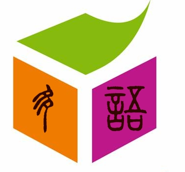
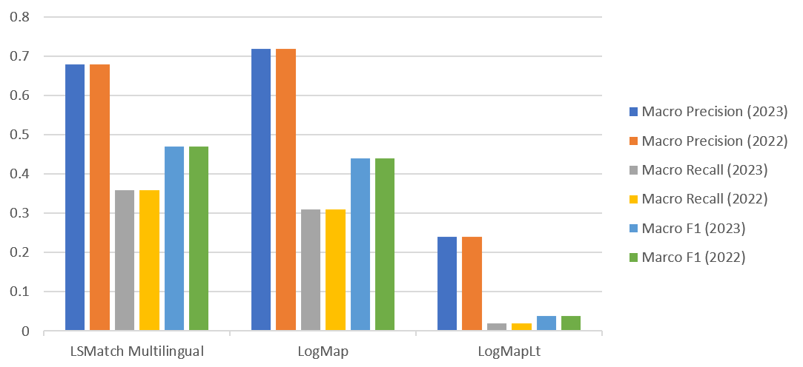
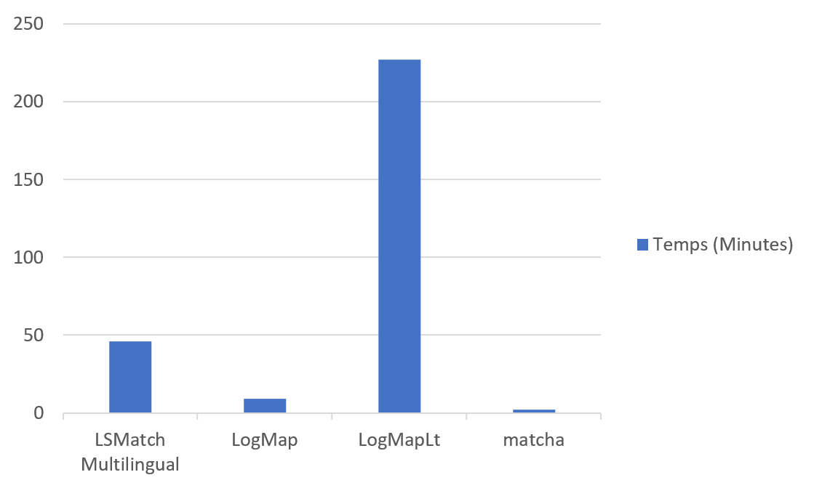
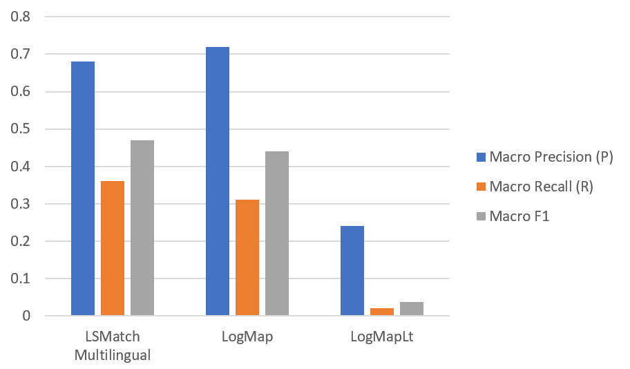

In this page, we report the results of the OAEI 2023 campaign for the MultiFarm track. The details on this data set can be found at the MultiFarm web page.
If you notice any kind of error (wrong numbers, incorrect information on a matching system, etc.) do not hesitate to contact us (for the mail see below in the last paragraph on this page).
We have conducted an evaluation based on the blind data set. This data set includes the matching tasks involving the edas and ekaw ontologies (resulting in 55 x 24 tasks). Participants were able to test their systems on the open subset of tasks. The open subset counts on 45 x 25 tasks and it does not include Italian translations.
We distinguish two types of matching tasks :
As we could observe in previous evaluations, for the tasks of type (ii) which is similar ontologies, good results are not directly related to the use of specific techniques for dealing with cross-lingual ontologies, but on the ability to exploit the fact that both ontologies have an identical structure. This year, we report the results on different ontologies (i).
This year, 4 systems have registered to participate in the MultiFarm track: LSMatch Multilingual, LogMap, LogMapLt, and Matcha. The number of participating tools is similar with respect to the last 4 campaigns (5 in 2022, 6 in 2021, 6 in 2020, 5 in 2019, 6 in 2018, 8 in 2017, 7 in 2016, 5 in 2015, 3 in 2014, 7 in 2013, and 7 in 2012). This year, we lost the participation of CIDER-LM. But we received new participation from Matcha. The reader can refer to the OAEI papers for a detailed description of the strategies adopted by each system.
The systems have been executed on a Ubuntu Linux machine configured with 32GB of RAM running under a Intel Core CPU 2.00GHz x8 processors. All measurements are based on a single run. As for each campaign, we observed large differences in the time required for a system to complete the 55 x 24 matching tasks: LSMatch Multilingual (46 min), LogMap (9 minutes), LogMapLt (227 minutes), and Matcha (2 minutes). When we compare the times to the last year's campaign, we can see that LogMap has the stable 9 min execution whereas LogMapLt saw a decline in timing from 175 min to 227 min, and LSMatch Multilingual improved the timing from 69 min to 46 min. Since the other tools are participating first time their timings are not comparable. These measurements are only indicative of the time the systems require for finishing the task in a common environment.
The table below presents the aggregated results for the matching tasks. MultiFarm aggregated results per matcher for different ontologies. Time is measured in minutes (for completing the 55x24 matching tasks).
| Different ontologies (i) | |||||
|---|---|---|---|---|---|
| System | Time(Min) | Prec. | F-m. | Rec. | |
| LogMap | ~9 | .72 | .44 | .31 | |
| LogMapLt | ~227 | .24 | .038 | .02 | |
| LSMatch Multilingual | ~46 | .68 | .47 | .36 | |
| Matcha | ~2 | .37 | .08 | .04 | |
LSMatch Multilingual, LogMap, LogMapLt, and Matcha have participated this year.
Figure below presents the aggregated results for the matching tasks. They have been computed using the MELT framework. We haven't applied any threshold on the results. They are measured in terms of macro precision and recall. We do not report the results of non-specific systems here, as we could observe in the last campaigns that they can have intermediate results in tests of type ii) and poor performance in tests i).

LSMatch Multilingual outperforms all other systems in terms of F-measure (0.47) and recall (0.36), and LogMap outperforms all other systems in terms of Precision (0.72).
In terms of runtime, Matcha takes the lead followed by LogMap.

Comparing the results from last year, all the systems maintain their performance.

It is seen that similar number of different systems are participating each year to the campaign through the years. However, there is a dynamicity of the tools, such that, each year participating tools vary. In 2022, we had 7 systems participating to the campaign where 5 of them were new systems and 2 of them were long-term participating systems. As observed in several campaigns, still, all systems privilege precision in detriment to recall (recall below 0.50) and the results are below the ones obtained for the Conference original dataset.
[1] Christian Meilicke, Raul Garcia-Castro, Fred Freitas, Willem Robert van Hage, Elena Montiel-Ponsoda, Ryan Ribeiro de Azevedo, Heiner Stuckenschmidt, Ondrej Svab-Zamazal, Vojtech Svatek, Andrei Tamilin, Cassia Trojahn, Shenghui Wang. MultiFarm: A Benchmark for Multilingual Ontology Matching. Accepted for publication at the Journal of Web Semantics.
An authors version of the paper can be found at the MultiFarm homepage, where the data set is described in details.
This track is organized by Beyza Yaman and Cassia Trojahn dos Santos. If you have any problems working with the ontologies, any questions or suggestions, feel free to write an email to beyza [.] yaman [at] adaptcentre [.] ie, jasarika [at] nitkkr [.] ac [.] in, and cassia [.] trojahn [at] irit [.] fr.